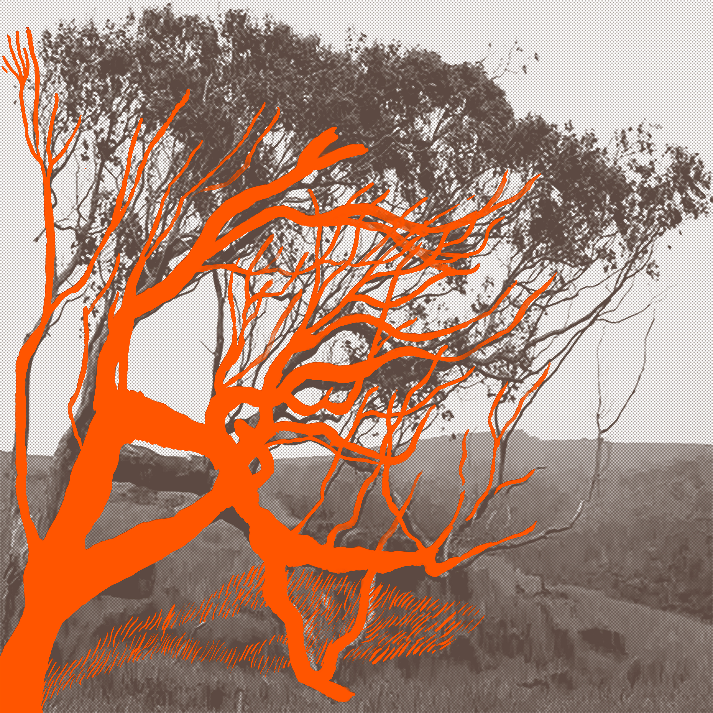

Exclusive Release
This page
is locked
Enter the password to access the music video premiere, the single, the journal, and the full lyrics.
Enter the password to access the music video premiere, the single, the journal, and the full lyrics.

The original demo recording — where it started.
"Indeed I Do" was written during an arts residency in Ubud, Bali — a song that poured out of me the moment I heard a close friend had passed away unexpectedly. I was deep in Elliott Smith, playing in local ensembles, and when I picked up my guitar, I felt like I was witnessing myself compose in third person.
Recorded back in California, it is releasing as a single with a music video and a celebration show at The Ivy Room in Albany, CA on August 6th, 2026.
Lyrics & Music by Jaime Tjahaja © 2025
Doctrine of Signatures Publishing Ltd.